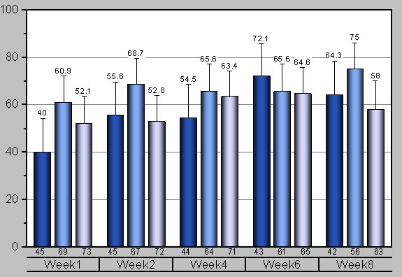
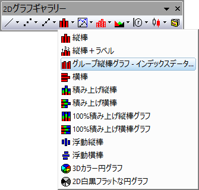
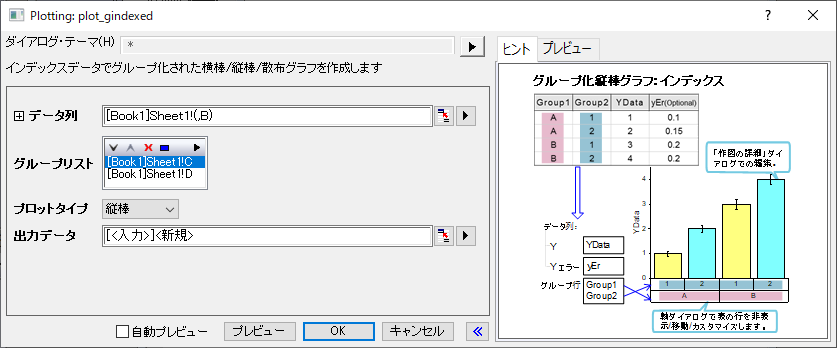
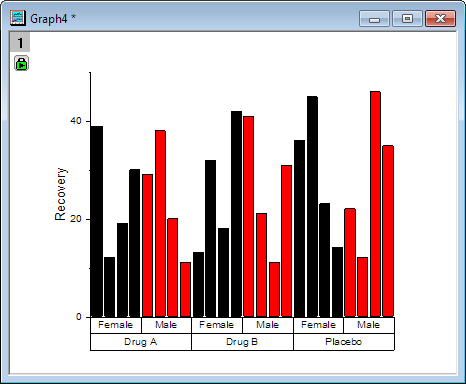
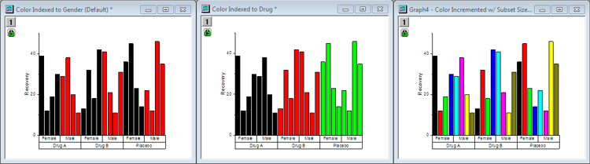

グループ化縦棒グラフ - インデックスデータ

要求されるデータ
入力データとして最低1つY列が必要です。また、オプションとして、それぞれのY列に対応するYエラー列を待つことができます。他の列はグループ化情報を提供します。
グラフ作成
plot_gindexedダイアログは次の3つの方法のうちの1つで開きます。
- メニューから，作図> カテゴリカル：グループ縦棒グラフ‐インデックスデータを選択します。
- 2Dグラフギャラリーツールバーの
 ボタンをクリックします。
ボタンをクリックします。
- 
開いたダイアログで、入力データ範囲を選択します。最低でも1つのグループ列を追加し、計算データの出力先を指定します。すると、グループ化茅グラフが生成されます。
ダイアログの内容に関する詳細は、次のセクションを参照してください。
plot_gindexedダイアログボックス

| データ列 |
この欄は、入力データを指定するのに使用します。 |
| グループ列 |
この部分は表示ボックスと5つのボタンがついたツールバー で構成されます。 で構成されます。
- 表示ボックス
- 追加ボタンで選択されたグループ範囲が表示されます。最初に選択されたグループ範囲で、第一カテゴリーとなり、プロットのグループ表の下部に表示され、2番目以降のグループは、その上に表示されます。
- 追加ボタン
- このボタンをクリックしてコンテキストメニューから1つの列選択します。あるい列の選択 をクリックして列ブラウザ を開き、表示ボックスにグループ化する範囲として表示します。最大5つのグループ範囲を追加できます。
- 削除ボタン

- 表示ボックスから選択したデータ範囲を削除します。このボタンはグループ列ボックスで1つ以上のデータ範囲を選択しているときに利用可能です。
- 上へ移動ボタン

- 表示ボックスで選択したデータ範囲を上に移動します。グループ順序を変更できます。
- 下へ移動ボタン

- 表示ボックスで選択したデータ範囲を下に移動します。グループ順序を変更できます。
- すべて選択ボタン

- グループ列のすべてのデータ範囲を選択します。
|
| グラフタイプ |
縦棒か横棒か指定します。 |
| 出力データ |
計算したデータを出力する場所を指定します。 |
さらに、このダイアログでは作成されるグラフをプレビュー出来ます。
ノート：
-
- このダイアログの再計算オプションはデフォルトで自動になっています。
- グループ範囲はデフォルトでアルファベット順にソートされますが、変更したい場合、列をカテゴリーとして設定し、カテゴリータブで編集します。
- このダイアログでグループ列プロットを作成する場合、デフォルトで、最初のグループ列で、列をサブセットに分けます。（作図の詳細）スペースタブで、デフォルトのプロパティを変更できます。
|
サンプル
 |
- 新しいワークブックを作成し、
 ボタンをクリックして<Origin インストールフォルダ>\Samples\Graphing\ にあるCategorical Data.datをインポートします。 ボタンをクリックして<Origin インストールフォルダ>\Samples\Graphing\ にあるCategorical Data.datをインポートします。
- 列Bを選択して、メニューから作図：棒グラフ：グループ縦棒グラフ‐インデックスデータと操作し、plot_gindexedダイアログを開きます。
- グループ列の項目で、右上にある追加ボタン をクリックし、列Dを最初のグループとして追加し、同様にして列Cを2番目のグループとして追加します。
- OK をクリックして、グラフを作成します。
- 
|
テンプレート
gColumn.otp gBar.otp (どちらもOriginの実行フォルダ内にインストール)
ノート
- 1つ以上のグループ範囲がある場合（ グループ列ボックス で）、X 軸目盛ラベルはデフォルトで表として表示されます。軸目盛表の表示とフォーマットは、一般に、 軸ダイアログの 目盛ラベルタブにある表タブから変更できます。
- このプロットでは、 インデックス が色塗りの初期設定になっていますが、他にも選択肢があります。次は、同じグラフでの3つのバリエーションを示しています。それぞれの違いは、棒グラフに適用されている色の設定によります。
-
- 左のグラフでは、棒の色は、インデックス により、サブグループ(Gender) によって分けられています。これは初期設定であり、アンバランスなプロットを含んだ様々なタイプに合わせていく必要があります。
- 中央のグラフ図では、棒の色をメイングループ（Drug）に、インデックス 設定されています。
- 右のグラフでは、棒の色はB列のサイズによって 推移 するように設定されています。
- 
- 詳細は、こちらを確認してください：
- 棒やグループ化された棒の間隔は、作図の詳細ダイアログの棒の間隔タブでコントロールできます。
- グループ化した横棒グラフを作成するには、plot_gindexedダイアログで プロットタイプを横棒に設定します。あるいは、メニューからグループ化縦棒グラフを作図し、グラフ操作: X軸とY軸の交換を選択します。